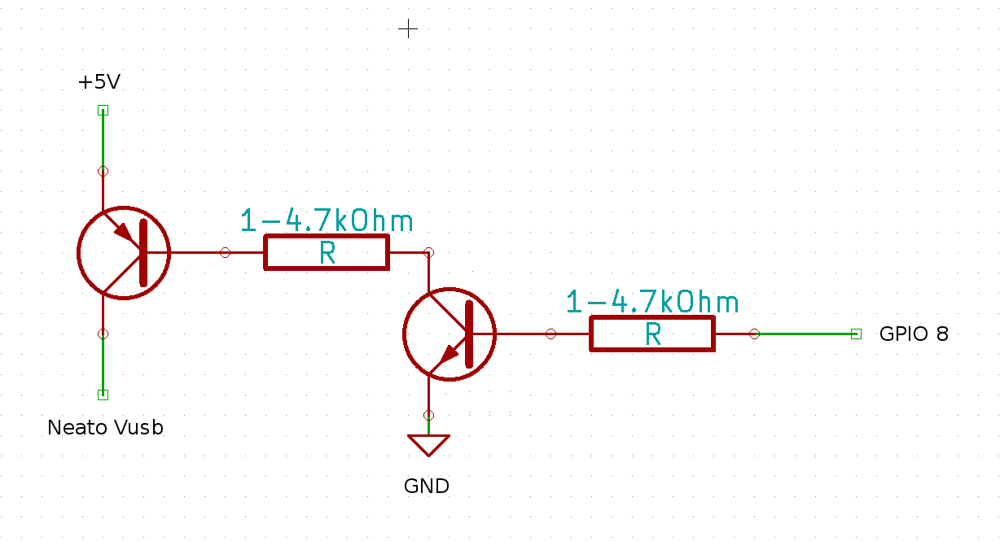
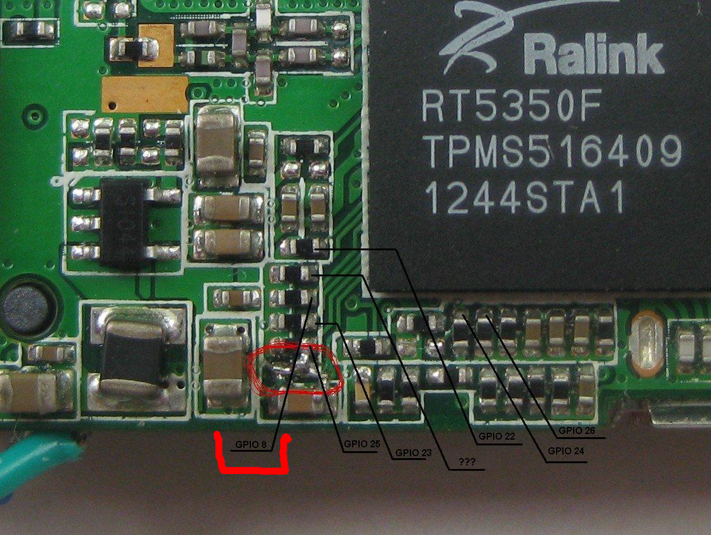
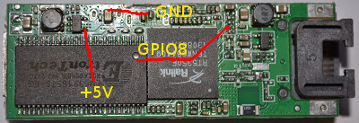

Neato XV series WiFi remote control.
Neato is great in cleaning by it self, it also has good "spot clean" algorithm! But, what if you want to clean just a certain spot? In other words - use it like a regular vacuum?That was the basic idea which led to realization of the full wireless remote control.
As you may know, you can manually control Neato right out of the box by connecting it to any computer via usb and, through any terminal program, send commands to robot (for some reason article describing command list on official Neato site is unreachable at this moment, but you can get it by typing 'help'). The way you can control Neato movements is described here: http://xv11hacking.wikispaces.com/XV-11+API+Commands
This is really great, but how can one use it for robot's intended purpose if he or she is limited by the length of the wire? Of course you can take a laptop! :) But for me it was not the answer. Luckily, my friend recently has brought a compact (very compact) WiFi router (Commonly available from eBay as "2g/3g/4g wifi router": http://www.ebay.com/itm/Blue-Mini-AP-Global-Minimum-Wireless-3G-WIFI-150Mbps-Router-MPR-A5-JNEG-/310981424484?pt=LH_DefaultDomain_186&hash=item4867eff564 , also known as HAME MPR-A5 and MIFI-F5. MPR-A1 and clones are likely to work as well if you manage to fit them in. Some additional material is available on http://my-embedded.blogspot.com/2013/12/mini-4g-router-rt5350f.html) and suggested that we should try to embed it into my Neato.
So, it was obvious that all we needed was to find +5V power supply and connect usb from router to neato's usb. All that sounds simple, so we did it. (i should say that my Neato has rev.64 main board)


VCC - Red wire, D- - White wire, D+ - Green wire. (regular USB pinout)
Very soon we realized that, first of all - there is no powerful enough +5V source on the main board, and the second one - Neato's software blocks it from normal functioning if it senses power supply on its usb :(
The answer to the first problem was as simple as buying 5V 500mA DC-DC converter (DC-DC on digikey.com) A local shop had Peak PSR-7805LF available for a reasonable price so I settled on that one.

Answer to the second problem was a bit tricky! On the router board there is a source of power which can be turned on/off by changing state of its GPIO8 (echo 1 >/sys/class/gpio/gpio8/value), so my friend suggested that we will be able to control usb power supply by one P-N-P transistor witch base must be connected to that gpio. All that going to be great if only router could gave us +5V, but its voltage is only +3.3V. In the end the answer was found: we'd connected +5V from DC-DC to the Neato's usb through one p-n-p and one n-p-n transistor (with a pair of resistors) controlled by the router's +3.3V as shown below.


To get rid of micro USB plug we soldered power supply wires from DC-DC right on router's board:

P.S. To fit router with all the stuff inside neato's body i've made a small 'modification' using my dremel:


Thats about the hardware, the other part is software.
So now i have a fully functional Neato with a full control from any place in the world ;) I can remotely start cleaning in full cycle, or change its schedule, or use it full manual, or, even, just play like with RC car :)